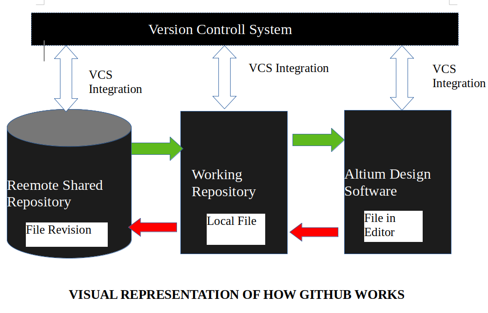

Introduction To Github
Git is free, Open Source Version Controll System. It was created by linux Trovald in 2005. Many Developers
on linux Kernel Developed this tool to work collectively.
In real world developer work in teams and they need to know about each other codes. They have make sure
that their is no conflict between them. So this version Controll System Github help them a lot.
Most of the time the requirement of the project change with time so developers can go back to their
older version of code and make changes. That's cool.
Basically think Github as a small software application that controll your code base , if your a Develoer.
The branch System in Git allows developers to work indivisually on a specific task.

Git Repositories
To start working in Github we need to know where we have to host our Repositories. A Repository ("repo")
is project which contains multiple files. In our case it will contain code-based files.
Two ways to host your files
1. One is online(on clod) 2. Offline Self installed on your server
There are three popular Github hosting services
- Github(owned by microsoft)
- Gitlab(owned by Gitlab)
- Bitbuket
We will use Github as our hosting service because there are several reasons!
Why we need Github Brads?
1.Git make it easy to contribute to open source projects
Most of the open-source projects uses github to manage thier projects. The reason is in open-source
any one can contribute for the code and Using Github is free if your project is open-source and it includes
Wiki and issue tracker that makes it easy to include more in-depth documentation and get
feedback backs about your project quickly.
If you want to contribute you just have to fork (get a copy) a project, make changes and then send a pull
request using Github's web-interface. This pull reqest is your way of telling projest that you are ready to
review changes.
2.Documentations
Using github ,you make excellant Docuementations. Their help Section and guide have article related
to all topics about Github that you can think of.
3.Integration Option
Another cool feature is Integration and it can integrate with Amazon and Google-Cloud with services such
as code climate to track your feedback and highlight syntax in nearly 200 Programming languages.
4.Track Changes in your code across Version
As multiple people collaborate in a project and they make many changes in the code. It is a heptic
task for developer to keep a track of revisions- who changed what , when and where those files are stored.
But thanks to Github it is taking care of all the changes that have been pushed to the repository.
Much like using Microsoft Word or Google Drive you can have a version history of your code that previous
version history of your code so that previous version are not lost with every iteration. It is really easy to
comeback to previous version and contribute to your work.
Showcase Your Work
Are you a developer who wishes to attract recruiiters? Then Github is the best tool you can rely on for this.
Today for a new recruit for thier project people look at the Github profile they will never check your
university background.
Installation of Github and it's usage
Github Account Creation
First you have to open the Github website and fill the registration form.
Git Installation commands
Now we have to install Git's tools on our device. We'll use CLI to communicate with Github.
For Ubantu:
1. First Update Your pakages
Sudo apt Update
2.Install git and githb with apt-get command
Sudo apt-get install git
3.Finally, Verify that git is installed
git --version
4.Run the following command with information to set a default username and email.
git config ---global user.email "Ctoic@gmail.com"
git config ---global user.name "Ctoic"